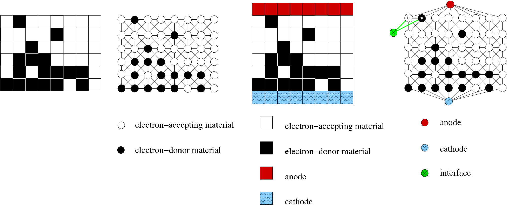

Functionality
Py-GraSPI (Graph-based Structure Property Identifier) is a Python package designed to compute a comprehensive set of descriptors for segmented microstructures using a graph-based approach.
py-graspi assumes that input microstructure is segmented into two phases: BLACK and WHITE. In our application, organic solar cells, BLACK pixels correspond to electron-donating materials, and WHITE pixels correspond to electron-accepting material - as marked in the figure below. Three meta-vertices are added to the network:
BLUE corresponds to cathode,
RED corresponds to anode,
GREEN corresponds to the interface.
As graph is being constructed, the meta-vertices are added to the graph. For the morphology inputed as an array, the BLUE vertex is added to all vertices in the first row, and RED vertex is added to all vertices corresponding to the last row in the input file. py-graspi reads the colors of the pixels starting from the bottom left corner. GREEN vertices are added as the graph is constructed, when BLACK pixel has any WHITE voxel in the neighborhood, two additional edges are added (between BLACK and GREEN, and between WHITE and GREEN).
{kind=link}
The package computes two types of descriptors: scalar descriptors and array descriptors. The scalar descriptors are directed to the standard output, while array descriptors are directed to the corresponding file. The array descriptors correspond to the shortest distances and are saved to a directory named descriptors
py-graspi provides multiple functions where a set of descriptors are computed - see the documentation for more details:
For two-phase morphology, py-graspi computes the following set of descriptors:
STAT_n - number of vertices
STAT_e - number of interface edges
STAT_n_D - number of black vertices
STAT_n_A - number of white vertices
STAT_CC_D - number of black connected components
STAT_CC_A - number of white connected components
STAT_CC_D_An - number of black connected components connected to top
STAT_CC_A_Ca - number of white connected components connected to bottom
ABS_wf_D - weighted fraction of black vertices
ABS_f_D - fraction of black vertices
DISS_f10_D - fraction of black vertices in 10 distance to interface
CT_f_e_conn - fraction of interface with complementary paths to bottom and top
CT_f_conn_D_An - fraction of black vertices connected to top
CT_f_conn_A_Ca - fraction of white vertices connected to bottom
CT_e_conn - number of interface edges with complementary paths
CT_e_D_An - number of black interface vertices with path to top
CT_e_A_Ca - number of white interface vertices with path to bottom
CT_f_D_tort1 - fraction of black vertices with straight rising paths (t=1)
CT_f_A_tort1 - fraction of white vertices with straight rising paths (t=1)
CT_n_D_adj_An - number of black vertices in direct contact with top (An - top/anode)
CT_n_A_adj_Ca - number of white vertices in direct contact with bottom (Ca - bottom/cathode)
The name of each descriptor starts with the abbreviation of the step in the photovoltaic process in organic solar cells (OSC): light absorption (ABS), exciton dissociation (DISS), and charge transport (CT). We additionally compute few statistical descriptors (STATS). The extra information is intended to facilitate the modeling of structure-property maps in OSC.